Префектура Аомори · Хиросаки и Аомори · сладости
Сладости Аомори в духе мингэй: гречишные пластинки, «снежки» из риса и лотерея с царём ада
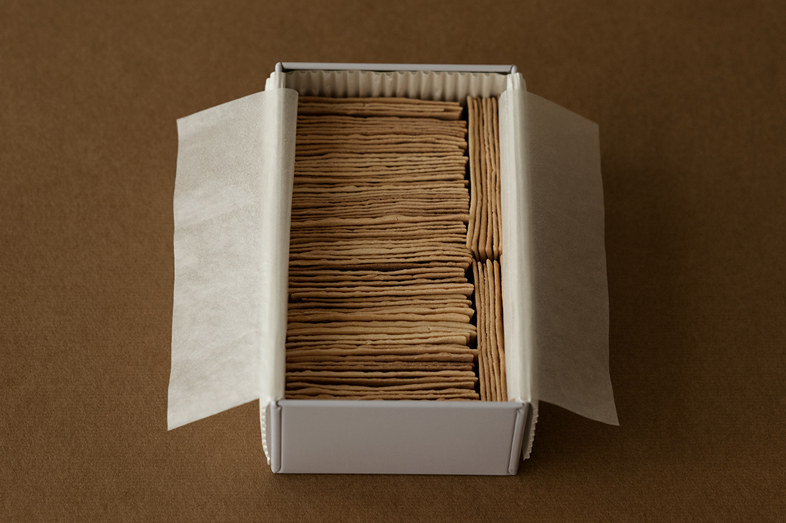
В Аомори есть сладости, которые хочется назвать народным ремеслом: их делают вручную по старинным рецептам, упаковывают в бумагу с рисунками художников и продают в лавках, где витрины сами по себе музейные. Четыре такие сладости из Хиросаки и Аомори.
Мингэй
Ремесло, которое можно съесть
Мингэй, движение за народное ремесло, ценит вещи, сделанные руками для повседневной жизни. Его основатель Мунэёси Янаги (1889–1961), философ и собиратель, искал красоту в простых предметах: в посуде, тканях, коробках. Одна из его главных книг называется «Японское ремесло».
Исследовательница японских сладостей, которая много лет ищет кондитерские с духом мингэй, сравнивает с этой книгой и сладости. Есть «ремесло, которое едят»: рецепт держится веками, форма и упаковка сделаны так же тщательно, как вещь для дома. В префектуре Аомори такие сладости есть, и лавки, о которых пойдёт речь, стоят в Хиросаки и в городе Аомори.
Хиросаки
«Осакая»: кондитер клана Цугару с 1630 года
Хиросаки в эпоху Эдо был замковым городом клана Цугару. Придворным кондитером клана служила лавка «Осакая», основанная в 1630 году. Её вывеска передаётся почти четыре столетия, а в ассортименте много знаменитых сладостей.
Предки хозяев лавки служили дому Тоётоми, и с этим связана одна из сладостей, о которой ниже.
Войдя в лавку, сразу замечаешь витрины и шкафы, отделанные перламутром по лаку. Такой лак с перламутровой инкрустацией традиционно шёл на коробки для сладостей, и несколько подобных вещей хранит Музей народного ремесла Японии в Токио. В «Осакая» эти первоклассные образцы мингэй не стоят за стеклом, а работают каждый день.
«Такэнагаси»: гречишное печенье толщиной с бумагу
Среди сладостей лавки выделяется «Такэнагаси», которую пекут с 1773 года. Это сверхтонкие пластинки с ароматом гречихи, японское печенье, если искать сравнение. Тесто раскатывают одной скалкой, и этот приём, по преданию, передавали устно только старшему сыну.
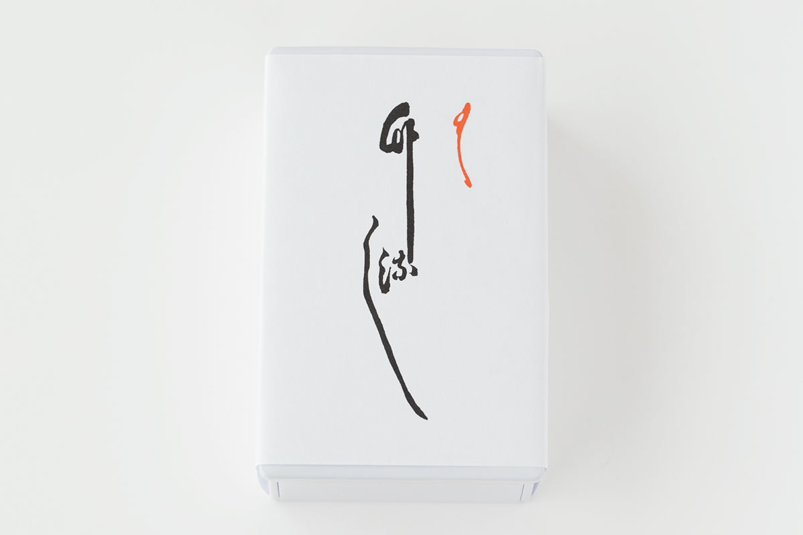
Пластинка во рту ломается с тихим хрустом и пахнет поджаренной гречихой. А когда открываешь банку, ряды пластинок, плотно уложенных друг к другу, хочется рассматривать снова и снова.
«Тока»: сладость, которая тает как снег
Вторая сладость, ради которой стоит прийти в «Осакая», называется «Тока», то есть «зима и лето». Название, по словам лавки, напоминает о зимней и летней осадах Осаки (1614–1615), в которых дом Тоётоми потерпел поражение: этого нельзя забывать. Рецепт сохранился со времён Эдо.
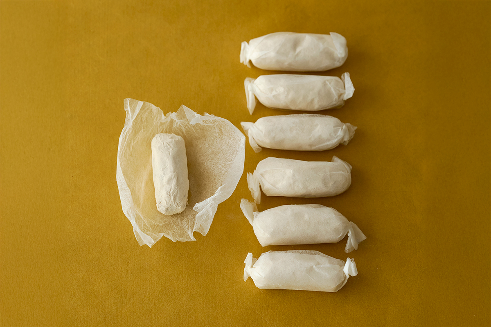
Для воздушной текстуры клейкий рис смешивают с сахаром и долго выдерживают, так что от начала работы до готовой сладости проходит три–пять месяцев. Выдержанную основу обжаривают и обсыпают тонким сахаром васамбон. Сладость хрустит под зубами и тает во рту, как снег. Такое лёгкое печенье требует времени и опыта, и встретить его можно редко.
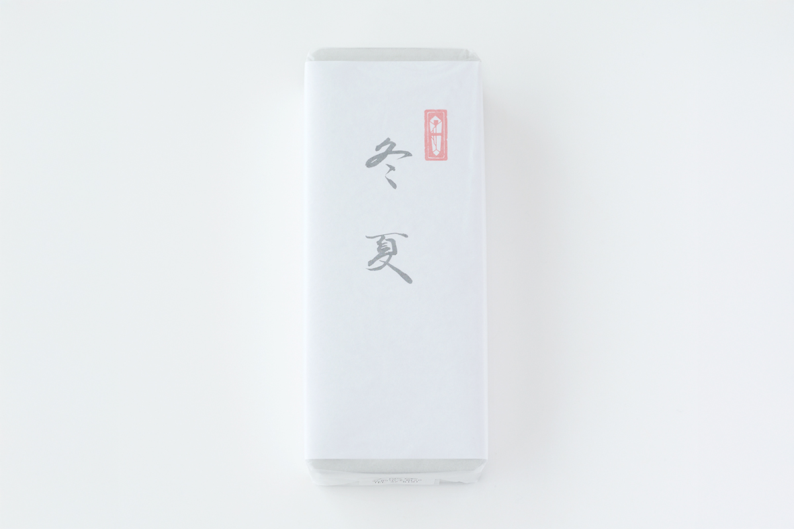
Обёрточная бумага лавки тоже достойна внимания. На ней замок Хиросаки и гора Иваки, нарисованные Дзёё Нодзавой (1865–1937), художником из Хиросаки. Сико Мунаката, о котором речь пойдёт ниже, почитал его как старшего земляка. Сам замок и его парк описаны в статье о сакуре в Хиросаки.
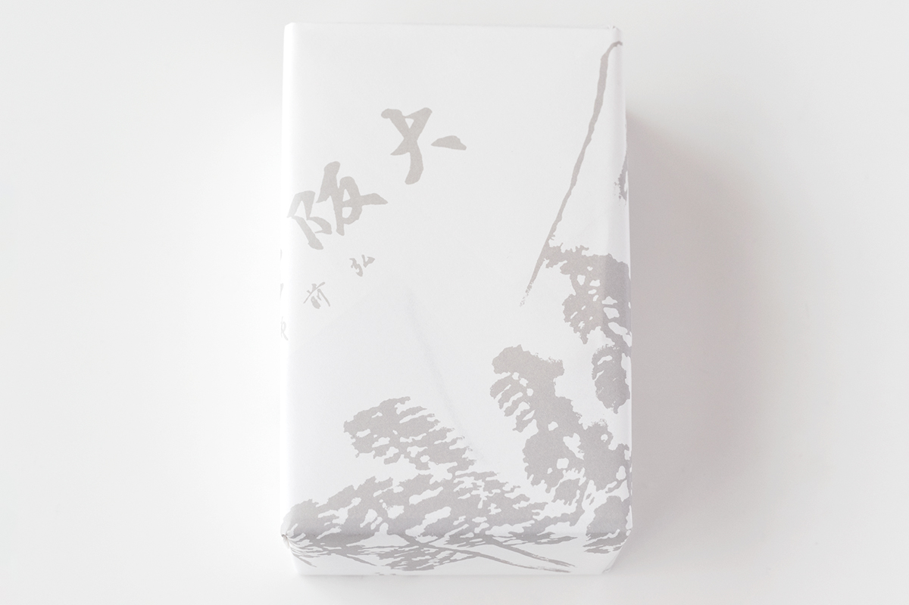
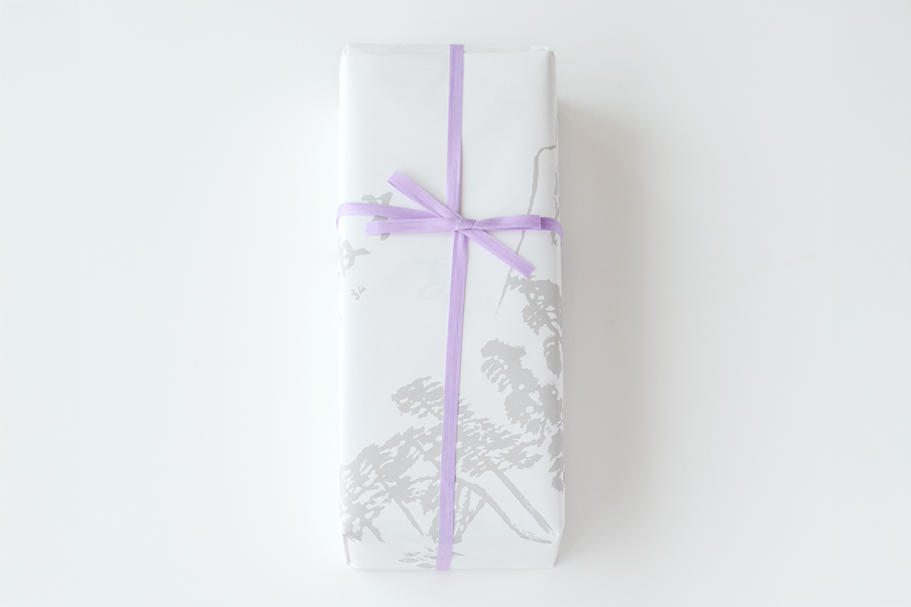
Рядом: когин-заси
У «Осакая» удачное место для тех, кто едет за мингэй. В пяти минутах ходьбы работает Институт когин Хиросаки, где до сих пор делают когин-заси, вышивку Цугару, которую Мунэёси Янаги высоко оценил в «Японском ремесле». В поездке по Хиросаки стоит заглянуть в оба места.
«Осакая»
- Адрес
- префектура Аомори, Хиросаки, Хоммати, 20
- Телефон
- +81 172-32-6191
- Часы работы
- 8:30–17:30
- Выходные
- нет
Хиросаки
«Сато сэйка»: лотерея с царём ада
Формы для сладостей тоже относятся к мингэй: в них соединены польза и красота. Музей народного ремесла Японии в Токио при директоре Сори Янаги (1915–2011), дизайнере, дважды устраивал выставки форм для японских сладостей. Журнал движения публиковал не только японские формы, но и корейские формы для рисовых лепёшек эпохи Чосон, а также китайские, индонезийские и европейские.
Большие формы для сладостей встречаются всё реже, но «Дайо-атэ», которые известны в Аомори с первых лет эпохи Сёва (она началась в 1926 году), делают по-прежнему. Их выпускает «Сато сэйка», старая лавка дешёвых сладостей в Хиросаки.
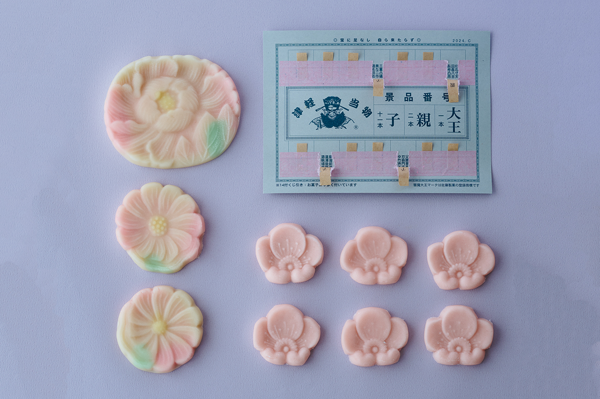
Название переводится как «угадай царя». В районе Цугару детям для нравственного воспитания показывали свитки с картинами ада, а царь ада Эмма судит всех без исключения. Отсюда и имя сладости: обманывать в лотерее, которую решает Эмма, нельзя даже родителям. Из той же истории, как считают, пошли и три вида лотерейных билетов: «ребёнок», «родитель» и «царь».
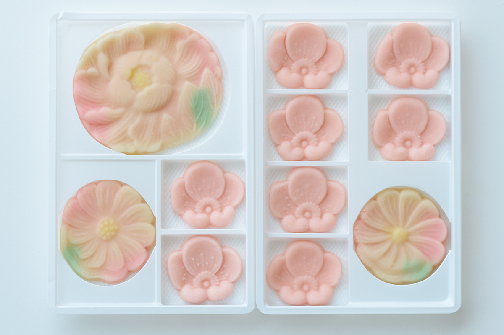
Лотерейная карточка устроена просто: под розовой папиросной бумагой спрятан приз, и его видно, только когда бумагу приподнимешь. Каждую карточку до сих пор клеят вручную, по одной, и открывать её волнительно в любом возрасте. Главный приз это белая фасолевая паста, подкрашенная в бледно-розовый цвет и отлитая в форме большого цветка. Сначала любуешься рисунком, а потом мягкой сладостью белой пасты.
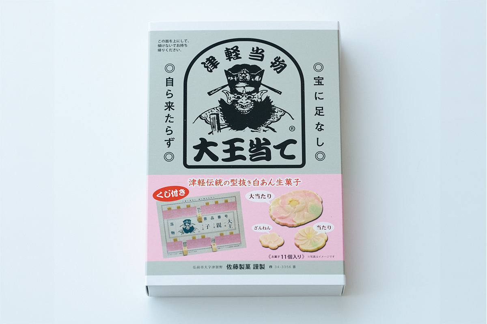
«Сато сэйка»
- Адрес
- префектура Аомори, Хиросаки, Цугано, Миядзаки, 68
- Телефон
- +81 172-34-3356
- Часы работы
- 13:00–17:00
- Выходные
- среда, воскресенье
Аомори
«Сёэйдо»: пирожки в честь Сико Мунакаты
Сико Мунаката (1903–1975) стал мастером гравюры на дереве после того, как его работу горячо похвалил Мунэёси Янаги. В жизни он был человеком, которого невозможно не заметить: кудрявые волосы, круглое лицо, весёлый нрав и густой говор Аомори. Его приметой были круглые очки с толстыми стёклами. Мунаката работал в простом кимоно и из-за сильной близорукости резал доску, почти касаясь её головой. Известна и его фраза: «Я стану Ван Гогом».
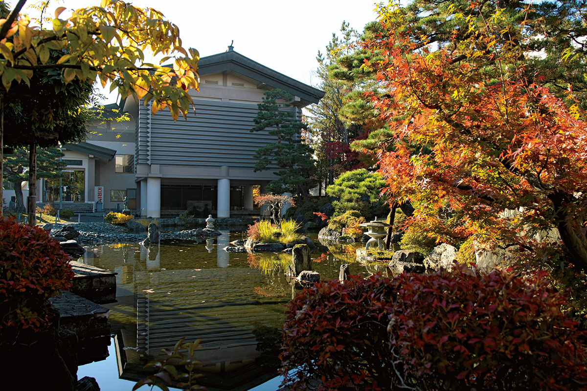
В родном городе художника, Аомори, в 1975 году открылся Мемориальный музей Сико Мунакаты. В его собрании были главные гравюры, например «Два бодхисаттвы и десять учеников Будды», а также рисунки кистью и картины маслом, и работ Мунакаты здесь было больше, чем где-либо в стране. 31 марта 2024 года музей закрылся.
Примерно в десяти минутах ходьбы от здания музея стоит кондитерская «Сёэйдо». Её знаменитая сладость «Сикокан-дори», «улица музея Сико», это ароматный пирожок с яблоком и белой фасолевой пастой. На корочке выжжено клеймо в виде цветка: по рассказу кондитерской, Мунаката в шестом классе школы залюбовался цветком и захотел стать человеком, который сумеет передать такую красоту.
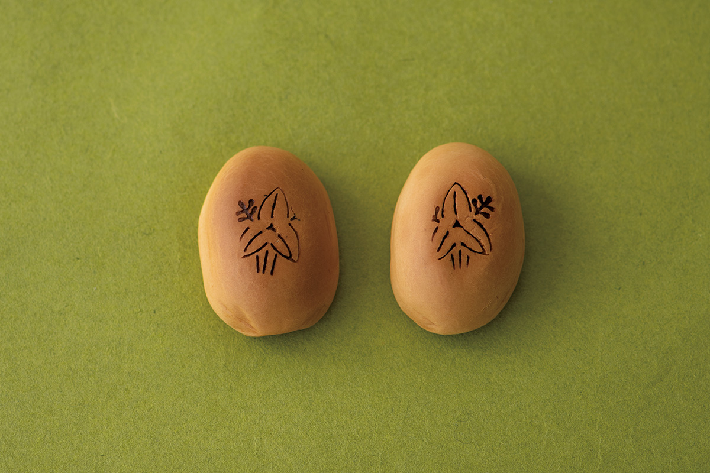
Такой пирожок хорошо привезти в подарок самому себе.
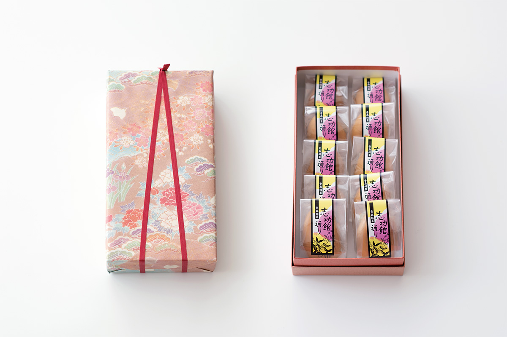
«Сёэйдо»
- Адрес
- префектура Аомори, Аомори, Сакаэмати, 1-5-4
- Телефон
- +81 17-743-1863
- Часы работы
- 9:00–19:00
- Выходные
- нет
- Сайт
- syoeido.co.jp
Фото: Вакана Баба.